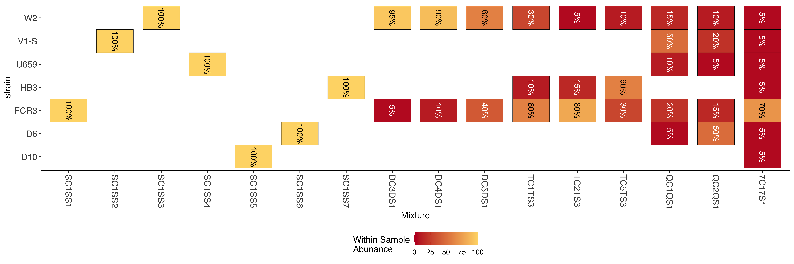

Data description
Overview
PGEforge hosts simulated and empirical datasets of:
They can be located at the PGEforge/data folder.
Whole genome sequencing (WGS) data for P. falciparum
Pf3k
All of the data within the subfolder wgs/pf3k was derived from the Pf3k Project. Currently, there are three VCF files, with corresponding CSVs containing metadata, for samples from: - Democratic Republic of the Congo (\(n=113\)) - Vietnam (\(n=97\)) - In vitro mixtures of laboratory strains (\(n=25\))
Each VCF contains 247,496 high-quality (VQSLOD>6) biallelic SNPs across all fourteen somatic chromosomes. The VCFs are sorted and an index file is provided. The Fws statistics provided in the metadata CSVs were collected from the Pf7 data set, which contains the Pf3k samples. These were not calculated for the in vitro lab mixtures.
Simulated
All of the data within the subfolder wgs/simulated was simulated. In brief, a simulated sample with a given complexity of infection (COI), \(K\), is created by randomly sampling \(K\) clonal haplotypes (\(F_{ws} > 0.95\)) from a given country within the Pf3k Project, assigning these haplotypes to \(j \leq K\) bites, simulating meiosis if \(j < K\), randomly sampling proportions for each haplotype, and then simulating read count data given the proportions and final genotypes. Sequencing error is simulated at a fixed rate and present in the read counts. No variant calling error is simulated; the genotypes are perfect. At present, there is only one VCF file with a corresponding CSV and BED file containing metadata, with samples simulated from: - Democratic Republic of the Congo (\(n=40\))
The COI of these samples ranges from one to four, and about half of them have within-host relatedness.
Lab isolates sub-setted
There are a set of bam files with vcf calls subsetting to just CSP (PF3D7_0304600), CELTOS (PF3D7_1133400), and AMA1 (PF3D7_1216600). These can be found within the wgs/labisolate_subset directory. With metadata describing what is in each file wgs/labisolate_subset/allControlMixtures.tab.txt, wgs/labisolate_subset/allControlSampNameToMixName.tab.txt
Microhaplotype data
Mozambique Field Samples
Targeted amplicon data from analysis for the following paper “Sensitive, Highly Multiplexed Sequencing of Microhaplotypes From the Plasmodium falciparum Heterozygome”(Tessema et al. 2022)
This contains 82 field samples gathered from northern and southern Mozambique and had 100 targets (91 diversity targets and 9 targeted drug targets).
The results file can be found within directory amplicon/moz2018_heome1_results_fieldSamples.tsv.gz along with metadata amplicon/moz2018_fieldSamples_meta.tsv. Results are in a 4 column format.
- sample - The name of the sample
- target - The name of the amplicon target
- target_popUID - A population identifier for the haplotype for this target for this sample
- readCnt - The read count for this haplotype for this sample for this target
Lab Control mixtures
Targeted amplicon data from the same 100 target panel as above. Mixtures are made of various combinations of 7 lab strains of P. falciparum and with some mixtures done in replicate at different 4 different parasite densities (10, 100, 1k, 10K.

Results are organized in a similar 4 column table as above. The results file can be found within directory amplicon/moz2018_heome1_results_controlSamples.tsv.gz along with metadata amplicon/moz2018_controlSamples_meta.tsv, amplicon/samplesToMixFnp.tab.txt, amplicon/mixSetUpFnp.tab.txt.
Simulated data
Targeted amplicon data was also simulated in silico to create 100 samples sampled from Mozambique and for a newer diversity panel called MAD^4HatTeR with 50 targets selected for thier diversity.
Results are organized in a similar 4 column table as above. The results file can be found within directory amplicon/mozSim_MAD4HATTERDiversitySubPanel.tab.txt.gz
SNP barcoding data
SNP barcode data from the sanger 100 SNP Plasmodium falciparum barcode (Chang et al. 2019).
sanger101_snp_barcode_withGenes.bed
Field Samples
The barcode was subsetted from the above WGS data to just the sanger barcode for the Vietnam and DRC data. The results file can be found within directory snp_barcode/sangerBarcode_SNP_INDEL_Pf3D7_ALL_v3.combined.filtered.vqslod6.biallelic_snp.Vietnam.vcf.gz, snp_barcode/sangerBarcode_SNP_INDEL_Pf3D7_ALL_v3.combined.filtered.vqslod6.biallelic_snp.DRCongo.vcf.gz
Lab Isolates
The barcode was also explicitly called with several monoclonal lab isolates and then lab created mixtures of these isolates. Data can be found snp_barcode/controls_sanger100.vcf.gz with meta data with what mixtures are what found snp_barcode/allControlMixtures.tab.txt and snp_barcode/allControlSampNameToMixName.tab.txt
Simulated
The barcode was also simulated for 100 samples (50 Bangladesh and 50 Ghana). Data can be found snp_barcode/SpotMalariapfPanel_simData_sanger100.vcf.gz. The simulations were created by simulating super infections by sampling the barcode from each of these countries and selecting COIs based on the COIs observed for each country.
Pfhrp2/3 gene deletion count data
The pfhrp2/3 gene deletion count data is available within the subfolder pfhrp2-3_counts. The data come from a study by Feleke et al. (2021).(Feleke et al. 2021)